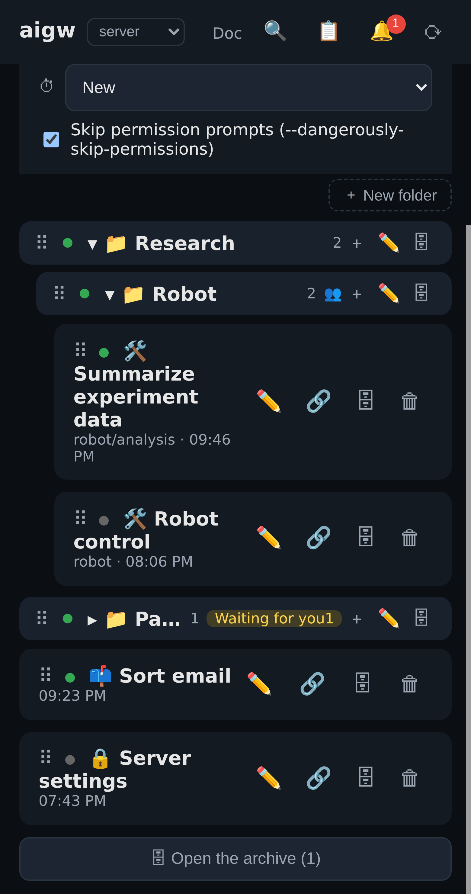
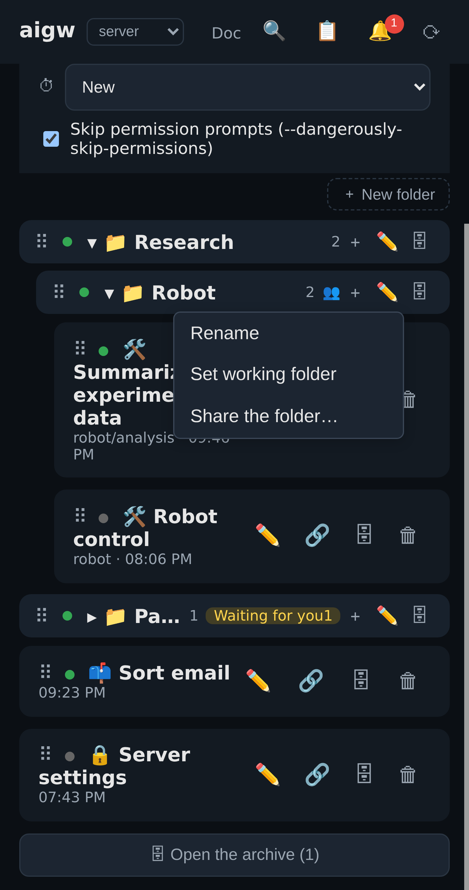
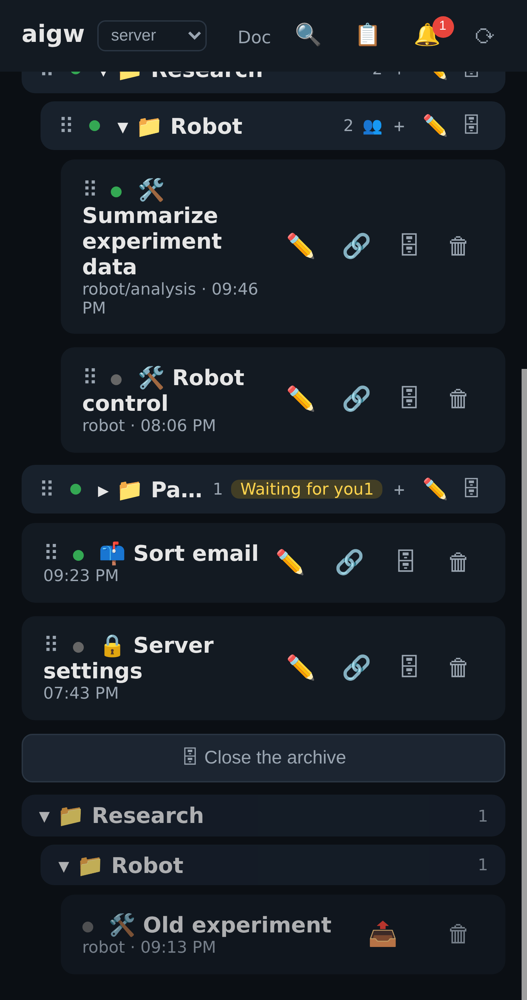
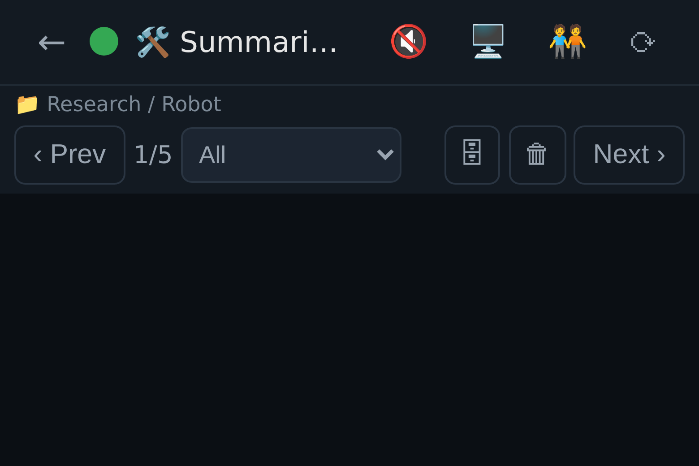
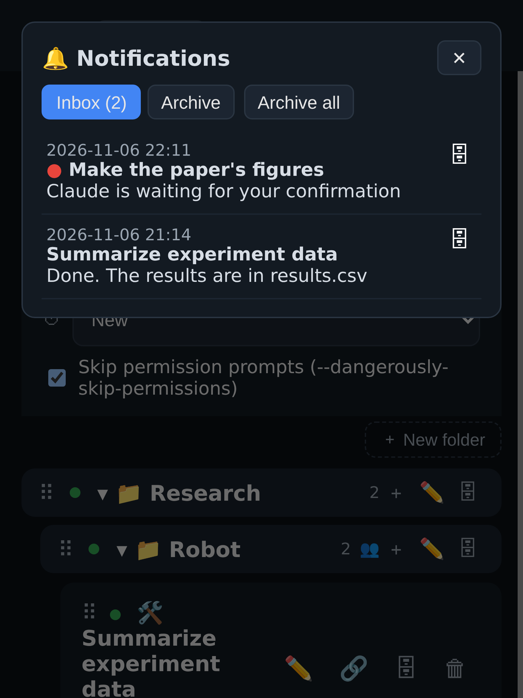
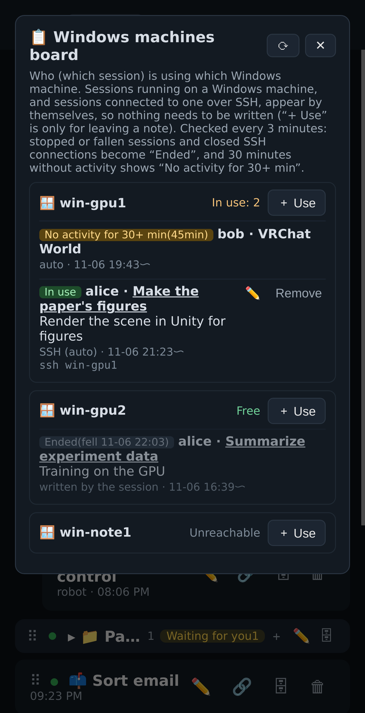

aigw Tutorial: Advanced
This continues from Basics. It covers keeping things organized as your sessions multiply (folders, patrol, notifications), linking with other sessions, going outside the sandbox (Email, host, root), and using other machines.
1. Organizing with folders
Sessions can be grouped into folders. You can also make folders inside folders, with no limit on depth.

- Create: “＋ New folder” above the list. To create one inside a folder, use that folder row’s ＋ → “New folder inside this one”.
- Put in / move: grab the ⠿ at the left of a row and drop it on a folder row to put it inside. Drop it between rows to reorder it there. You can also put a whole folder into another folder.
- Open / close: tap the folder row. The number on the row is how many sessions are inside, and “Waiting for you” is how many of them are waiting for your reply.
- Stop or resume all at once: tap the ● on a folder row to stop every session running inside it. Tap the grey ● afterwards to resume together the ones stopped that time.
- Archive: 🗄 archives the whole folder. Only empty folders can be deleted (🗑).
Working folders

A folder can have one working folder (a place on the server). Write it like robot via ✏️ → “Set working folder”.
- The place is written relatively: for a sandbox session it is
~/sandhome/robot; for a host shell, the place of the same name under your home; for a root shell, the place of the same name under/root. - Press that folder’s ＋ → “New session in this folder” and the creation box above the list shows “📁 Robot · working folder ~/robot”. Press Start and the session starts in that place and goes into that folder. If the place does not exist, it is created.
- Wherever you create it from, a new session started inside a working folder automatically goes into that folder.
- A folder with no working folder of its own uses its parent folder’s.
Sharing a whole folder
✏️ → “Share the folder…” shares every session in it (including folders under it and anything added later). Choosing who and “Read-only / Co-work” works the same as sharing one session at a time (Basics). Root shells become read-only, and Email is not shared by folder. A folder being shared gets 👥.
Folders in the archive

Sessions archived inside a folder are listed under the same folder in “🗄 Open the archive” too. Restore one with 📤 and it goes back to its original folder. A folder archived as a whole can be restored all at once with the 📤 on that folder’s row.
2. Waiting for you, and patrol
A session where Claude is waiting for your reply (its work is done, it is asking you to approve a plan, and so on) gets a yellow “Waiting for you” next to its name in the list.

- On the chat screen, tap the name to open the patrol bar (tap again to close it).
- ‹ Prev / Next › move to the previous or next session without going back to the list. The order is the list order (including inside folders).
- The selector lets you choose “All / Running / Waiting for you”. With “Waiting for you” you can go through just the ones waiting for your reply, one after another.
- 🗄 archives the current session and 🗑 deletes its conversation log, then you move straight on to the next one.
- The small text above the bar shows which folder of the list the session is in.
3. The notification list

- 🔔 at the top of the screen opens the list of notifications (push) received so far. The red number is how many you haven’t seen yet.
- Each shows the date and time, the session name and the text. Press one to open that session.
- Anything shown in the list counts as seen. Archive one with 🗄, or all at once with “Archive all”.
- Finished ones move to the archive automatically: when, after the notification, you sent something to that session, or the session ended, was archived or was deleted. The reason is shown in the archive section.
4. Linking sessions together
🔗 in the list links two sessions (for example, a sandbox Claude and a host Claude). Once linked, a message reaches the other side’s input box only when one Claude runs talkto "…". It does not forward everything automatically. Claude can look up how to use it with talkto --help.
5. Sandbox, host, root and Email: the differences
The kinds in the creation box differ in “where they run”. For everyday use you only need the sandbox (Claude, Codex, Shell (inside sandbox)).
| Kind (as shown in the creation box) | Runs in | Can see | Passkey | Use it for |
|---|---|---|---|---|
| Claude / Codex / Shell (inside sandbox) | Sandbox: your own private container | Only ~/sandhome | Not needed | All everyday development |
| Email box: a container separate from the sandbox (only on servers set up for it) | Only ~/mailbox | 🔑 host tier | Email, personal information and other things you don’t want in the development sandbox | |
| Shell (outside sandbox, host) | The server itself, with your permissions | Your real home (~/) and more | 🔑 host tier | Working with files outside the container |
| Shell (root, outside sandbox) | The server itself, as root | Everything | 🔓 root tier | Server administration. Shown only to permitted people |
- Why the sandbox is for everyday use: inside the container, whatever Claude runs cannot reach beyond your
~/sandhome. That is why it is safe to skip permission prompts. - Why the Email box is separate: in the sandbox, other people’s packages pulled in by
npm installalso run. If you put information like email there, they could read it too. The Email box is a separate container invisible from the sandbox, and its conversation records also stay on the~/mailboxside. - If you pick another machine connected over ssh in the machine selector, you can use Claude and shells on that machine too. It does not share files with the sandbox (Chapter 9).
- In the list, the icon before the name tells you the kind: 🛠️ sandbox, 📫 Email, 🏠 host, 🔒 root, 💻 another machine.
6. The Settings screen and logging in to Claude
Before using Claude for the first time, log in to Claude once for each place you use it. The sandbox, host, root and other machines each have separate login information. Only the Email box has no row on the Settings screen; you log in inside the box.

How to open it
Choose Settings in the machine selector on the top screen (the server field). To go back, choose server (this server) again in the same field.
How to log in
- Press Log in on the inside sandbox row under “Accounts” (or on the row for the host or another machine if you use those). A chat screen for logging in opens.
- A URL appears in the chat; tap it to open it in the browser and approve with your Claude account.
- Copy the code shown, paste it into the chat’s input box and press Run. The pasted code is not shown on screen, and that is normal.
- A single line saying success or failure appears, and the login session disappears automatically. Once the row on the Settings screen shows your email address, you are done.
- Where a row says “Not logged in” (in yellow), Claude does not work in that place.
- The Codex columns use the same procedure (with a ChatGPT account).
- ⟳ next to the heading refreshes the status.
- The selector next to the heading changes the Language (日本語, English, 简体中文). Your choice is saved, and other devices get the same once you log in there. You can also choose it at the bottom of the login screen.
- 👥 Everyone's logins at the very bottom shows, for everyone on this server, which Claude and ChatGPT accounts they are logged in to and where (view only). Root logins are shown only to people who have root unlocked.
- Kill Chrome just above it is a button that stops your own test browser (headful Chrome). Feel free to press it when things get slow. It starts again automatically next time it is used.
7. Email and registering a passkey (key)
When going outside the container, as with Email, host and root, you unlock with a passkey (a key protected by your phone’s fingerprint or face recognition, or your PC’s PIN). This is so that even if your aigw login is stolen, nobody can get outside without the device in your hands.
Registering a passkey (the first time)
- Log in to the server by SSH from a PC (Basics, Chapter 1). On servers that accept SSH only from the internal network, get onto the internal network first.
ssh <username>@<server> aigw-passkey register - A URL is shown. Within 5 minutes, open it in the browser of the device where you want the passkey (such as the phone you normally use aigw on). This URL can be opened from outside too (only SSH needs the internal network).
- On the “Passkey registration” page, press Register a passkey and confirm with fingerprint, face recognition or PIN.
- When the completion message appears, you are done. To add more devices, repeat the same steps on each device.
aigw-passkey list and the current status with aigw-passkey status.Using Email

- Choose Email in the creation box (it exists only on servers set up for it). The folder starts at your
~/mailbox, and as with Claude you can pick a folder below it or create one with＋. - Press Start and your device’s passkey confirmation appears. Confirm with your fingerprint or similar, and 🔑 appears at the top right, you are unlocked, and the session starts.
- Only for your first Email session, the Claude inside the box asks you to log in. Open the screen panel with 🖥️, choose the login method (your Claude account) with ↑ ↓ ⏎ in the key row, open the URL that appears and approve, then paste the code shown into the input box and press Run. If you are then asked whether it is OK to skip permission prompts, choose the option that agrees. This does not appear from the second time on.
- From then on, use it just like the sandbox Claude.
~/mailboxstarts empty, so prepare the tools you want (scripts to read mail, etc.) yourself or by asking Claude.
- Unlocking lasts until you lock it or 2 hours pass.
- Tap the 🔑 at the top right to lock immediately. If you open an Email session while locked, a “🔒 … Unlock” banner appears; tap it to unlock.
- The Email box cannot be seen by the sandbox Claude. Conversely, do not give instructions that carry Email content out into the sandbox.
8. How to become root
Root (administrator rights on the server) is available only to people the administrator has permitted. There are two routes, and both require action by you yourself.
Using aigw’s “Shell (root, outside sandbox)”
- Ask the administrator. The administrator runs the following on the server and gives you the URL it shows.
sudo aigw-passkey register <username> --tier root - Within 5 minutes, open the URL you received in your own device’s browser and press Register a passkey. This is your root-tier passkey (it can also unlock host and Email).
- Reload aigw and Shell (root, outside sandbox) appears in the creation box. Choose it, press Start and confirm with your passkey; the top right turns to 🔓 and a root shell opens.
- To use Claude in the root shell, log in to Claude on the root row of the Settings screen (Chapter 6).
Using sudo over SSH
People allowed to use sudo on the server can log in by SSH and use sudo. The administrator decides who is allowed.
9. Other machines and the Windows machines board
If there are other machines connected to the server over ssh (such as Windows machines with GPUs), they are listed in the machine selector (the server field). Choose one and the list and creation box become that machine’s, and you can run Claude and shells on that machine. Machines that can’t be reached (powered off, etc.) don’t appear.
- On Windows machines, you can choose the working drive and folder (
C:,D:…) in the creation box. You can also choose to continue an earlier conversation. - The 🐚/🪟 toggle chooses between no screen (🐚) and the logged-on desktop (🪟, for running apps with a screen).
- Sessions on other machines are marked 💻 in the list.
The Windows machines board

Windows machines are shared by several people, so there is a board showing “which one is being used by whose session”. Open it with 📋 at the top of the screen. People and Claude only need to look at the board before using a machine; there is no need to write on it.
- auto: aigw sessions running on that Windows machine are listed automatically.
- SSH, auto: if you connect to a Windows machine with
ssh,scp,sftporrsyncfrom inside a sandbox or host session, that is listed automatically too. When the connection ends it becomes “Ended (SSH closed)”. - Checked every 3 minutes: sessions that stopped or fell over show “Ended”, and ones with no chat activity for 30 minutes or more show “No activity for 30+ min”.
- Only if you want to leave a note about what you are doing, you can add one with ✏️ or write an entry by hand with “＋ Use” (a hand-written entry stays until you “Remove” it yourself). From inside a session,
aigw-boardshows the board. - Look at the board before using a machine, and if someone is using it, talk to them.
10. Troubleshooting
| Symptom | What to do |
|---|---|
| Can’t find a session | It may be inside a folder. Tap a folder row to open it. Sometimes a folder accidentally gets dropped on another folder and ends up inside it. Look in the archive too (Chapter 1) |
| Email or the host shell asks to “unlock” and won’t proceed | Check that you registered a passkey, and on that device (Chapter 7). If a locked banner is shown, tap it |
| The name shows as 🔒 | Email, host and root sessions hide their names until unlocked. Unlock from the banner above the list |
| Claude doesn’t reply, or asks you to log in | On the Settings screen, check whether that location’s row says “Not logged in”, and log in (Chapter 6) |
| Another machine doesn’t appear in the machine selector | That machine can’t be reached (power, network). Ask your administrator |
| Want to know whether someone is using a Windows machine | Look at the 📋 board (Chapter 9) |
| Too many notifications | “Archive all” in the 🔔 list. Finished ones move there automatically (Chapter 3) |
| Not sure about basic operations | “Troubleshooting” in Basics |